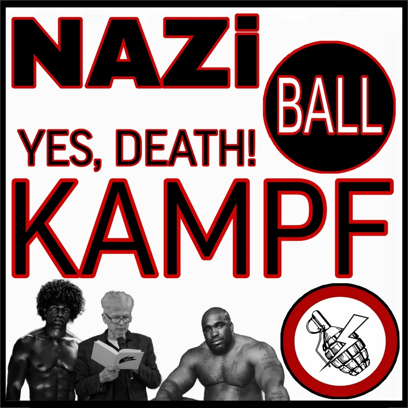

|
|
|
«БОЛЬШЕВИЗМ» У НАЦБОЛОВ
 |
Национал-большевистская партия Российской Федерации, а затем её преемница – Другая Россия Эдуарда Лимонова – были признаны экстремистскими и запрещены на территории РФ. Сам «вождь» движения отбыл тюремный срок. Если ознакомиться с программными документами, например, 2010 года или более поздними – программой 2020 года, то никак нельзя сказать, что мы имеем дело с большевиками. |
ПОЛИТИЧЕСКИЙ БЛОК |
ЭКОНОМИЧЕСКИЙ БЛОК |
БЛОК СУДЕБНОЙ СИСТЕМЫ |
БЛОК РЕГИОНАЛЬНОЙ ПОЛИТИКИ |
«Большевизм» у нацболов. Разбор программы 2020 года (ДРЭЛ) |
|
Красный Ёж |
Статьи: | Мы в соцсетях
|